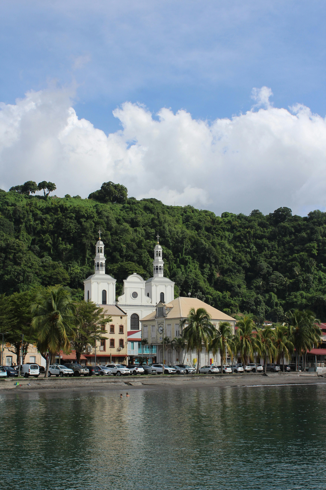
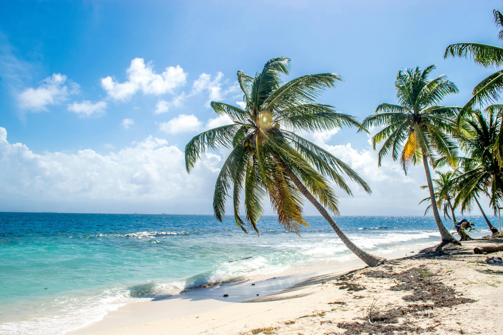
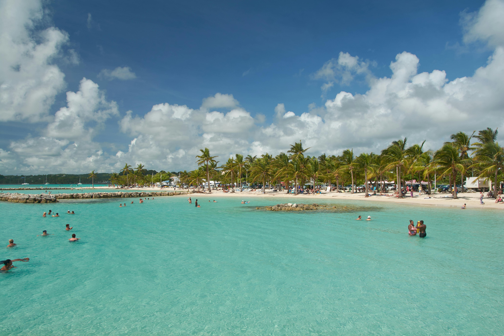
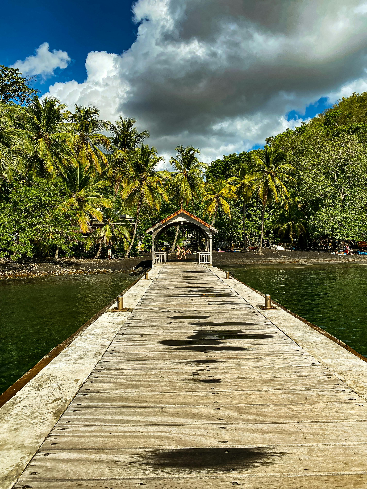

We took the fast ferry from Martinique to Guadeloupe for a few days — and found an island that was similar in language and culture but completely different in character. Wilder, greener, more spread out and more nature-focused than Martinique. We covered beaches on Grande-Terre, rainforest and waterfalls on Basse-Terre, the colourful village of Deshaies, the extraordinary botanical gardens, the slopes of La Grande Soufrière and the picture-perfect Îles des Saintes by boat. We also witnessed a man cycling through the port entirely without clothes, which was memorable in its own way.




The fast ferry from Fort-de-France to Pointe-à-Pitre took a few hours — a brilliant way to travel, sitting on deck watching the Caribbean slide past and the islands changing shape on the horizon. Arriving into Pointe-à-Pitre by sea is a proper Caribbean arrival — the city spreads around its waterfront, the ferry terminal buzzes with activity and the port has the organised chaos of a place that is used to people arriving with no particular plan.
Having lived in Martinique, we were well placed to notice the differences between the two islands. Both are French overseas departments, both are formally part of France, both have the same currency, the same boulangeries and the same Creole language underneath the French. But the characters are quite distinct — and after a few days on Guadeloupe we had a clear sense of what made each island its own place.
We found the atmosphere in Guadeloupe a little less immediately warm than Martinique — where the Martiniquais had been extraordinarily welcoming and friendly from the first day, Guadeloupe felt slightly more guarded towards outsiders in our experience. It didn't diminish the trip — the landscapes more than compensated — but it was a noticeable difference worth being aware of.
The port area of Pointe-à-Pitre has an energy all of its own — busy, loud, colourful and full of the kind of characters you only find in proper working Caribbean ports. The snake oil salesman was genuinely committed to his pitch and had a lot to say about the product's many and varied applications. We were politely but firmly interested in none of them. The naked cyclist simply cycled past and disappeared into the traffic, untroubled by the world's opinion of him.
It was the kind of arrival that sets the tone for a trip — slightly chaotic, entirely memorable and immediately entertaining. Guadeloupe, we realised, was going to do things its own way.
Grande-Terre is the flatter, drier eastern half of Guadeloupe — and it is where you find the island's finest beaches. The turquoise water along the southern coast of Grande-Terre is extraordinary — vivid, warm and calm, the kind of Caribbean blue that looks like it has been colour-enhanced in a photograph even when you are standing in it.
Sainte-Anne is Guadeloupe's most famous beach — a long crescent of brilliant white sand with turquoise water and palm trees framing every view. The village behind the beach is lively and colourful, with restaurants, bars and the easy Caribbean pace that makes you want to stay much longer than you planned. It is exactly the beach you imagined when you booked a Caribbean holiday.
The Plage de la Caravelle is one of the most beautiful beaches on the island — a wide, gently curving bay with powdery white sand and water in extraordinary shades of turquoise and blue. It sits in front of the Club Med resort but the beach itself is public and the setting is genuinely stunning. One of those beaches that makes you stop and just stare for a moment before you do anything else.
Pointe-à-Pitre is the main city of Guadeloupe — busy, colourful and quite unlike the more refined Fort-de-France across the water. The central market is brilliant — local produce, spices, Creole food, flower sellers and the noise and energy of a proper Caribbean city market. The Mémorial ACTe on the waterfront is one of the most significant and moving museums in the Caribbean — a stunning modern building dedicated to the history of slavery and its legacies, beautifully and powerfully presented.
Cross the narrow channel to Basse-Terre and Guadeloupe changes character completely. The flat, sunny beaches of Grande-Terre give way to a mountainous, densely forested landscape dominated by La Grande Soufrière — an active volcano at the island's heart — and laced with rivers, waterfalls and the lush green of one of the finest national parks in the Caribbean.
Deshaies is one of the most beautiful villages in the Caribbean — a colourful fishing village on the northwest coast of Basse-Terre with a gorgeous sheltered bay, brightly painted wooden houses climbing the hillside and some excellent restaurants along the waterfront. It became internationally famous as the filming location for the BBC series Death in Paradise, and visitors who know the show will recognise scenes immediately. Even without the TV connection, Deshaies is simply stunning — one of those villages that is exactly what you hope a Caribbean fishing village will be.
Just outside Deshaies, the botanical gardens are one of the great surprises of Guadeloupe — an extraordinary collection of tropical plants, flowers and trees spread across a hillside with waterfalls, ponds full of flamingos and free-roaming parrots that land on your arm if you hold still long enough. The gardens are beautifully maintained and the variety of plant life is extraordinary. Allow at least two hours and bring a camera.
The Cascade aux Écrevisses is one of Guadeloupe's most accessible natural wonders — a beautiful waterfall deep in the rainforest, reached by a short walk of about ten minutes along a well-maintained path. The forest around it is extraordinary — tall trees, the sound of water and birdsong, the sudden coolness of the shade. It is the kind of place that reminds you why Caribbean islands are so much more than just beaches.
The Route de la Traversée cuts through the heart of the Parc National de la Guadeloupe — a winding road through dense tropical rainforest, with viewpoints, trailheads and the extraordinary sense of driving through a jungle. It is one of the great scenic drives of the Caribbean and something entirely impossible on most other islands. The forest closes in on both sides, the road climbs and dips and the light filtering through the canopy above is extraordinary.
La Grande Soufrière is the highest peak in the Lesser Antilles and an active volcano — it last erupted seriously in 1976 and is carefully monitored. Many tours stop at its base or at viewpoints on the slopes, where the scale of the mountain and the sulphurous vents are clearly visible. The surrounding landscape is dramatic — black lava rock, steaming fumaroles and views across the island on clear days. A full hike to the summit is a serious undertaking but extraordinarily rewarding.
Just south of the main island, the Îles des Saintes are a small archipelago that regularly appears on lists of the most beautiful places in the Caribbean — and the reputation is completely earned. The main island, Terre-de-Haut, is one of the most picturesque places we have ever been — a perfect bay ringed by green hills, colourful wooden houses along the waterfront, excellent seafood restaurants and a pace of life that makes even the rest of Guadeloupe seem busy.
The boat trip from the main island of Guadeloupe takes about thirty minutes and is an experience in itself — the archipelago rises from the sea as you approach, Fort Napoléon visible on the hillside above the bay, the water turning from deep blue to extraordinary turquoise as you enter the shelter of the bay. It is genuinely one of the most beautiful arrivals in the Caribbean.
Terre-de-Haut is small enough to explore on foot or by scooter — the best way to see it — and the beaches around the island are extraordinary. The whole place has a relaxed, timeless quality that is increasingly rare in the Caribbean and absolutely worth the short boat journey to reach it.
Island hopping by fast ferry through the French Antilles — watching the islands change on the horizon and arriving into Pointe-à-Pitre by sea. One of the great Caribbean travel experiences.
One of the most beautiful fishing villages in the Caribbean — colourful, charming, with a gorgeous bay and the botanical gardens just up the road. Recognisable immediately to Death in Paradise fans.
Tropical plants, waterfalls, flamingos on the ponds and parrots landing on your arm. One of the great botanical gardens in the Caribbean and a genuine surprise highlight of the trip.
The most beautiful bay in the Caribbean, colourful wooden houses, extraordinary beaches and a timeless pace of life. The boat trip from the main island is half the experience. Unmissable.
Driving through dense tropical rainforest with the canopy closing above you — one of the great Caribbean scenic drives and something impossible on most other islands.
Snake oil salesmen, a naked cyclist and the organised chaos of a proper Caribbean working port. The welcome was unconventional. The memory is permanent.
Guadeloupe is spread across two very different main islands plus the Îles des Saintes — a guided tour is the best way to cover the rainforest, the volcano, the beaches and the boat trips properly without spending half your time working out logistics. TourRadar has brilliant Caribbean options covering Guadeloupe.
Disclosure: This is an affiliate link. If you book through it we may earn a small commission at no extra cost to you.
Boat trips to the Îles des Saintes, rainforest hikes, volcano tours, botanical garden visits, whale watching and snorkelling excursions — book your Guadeloupe experiences in advance, especially the Îles des Saintes boat trips which fill up fast.
Disclosure: If you book through this link we may earn a small commission at no extra cost to you.
Klook has a good range of Guadeloupe day tours, beach excursions and island experiences — great for booking individual activities around your stay.
Disclosure: This is an affiliate link. If you book through it we may earn a small commission at no extra cost to you.
Common questions
What to pack for Guadeloupe
Beaches, rainforest hikes, volcano slopes and boat trips — Guadeloupe needs practical tropical packing across a range of activities.
Guadeloupe is French territory — a worldwide SIM keeps you connected for maps and navigation across both islands and the Îles des Saintes.
View on Amazon →Caribbean sun on white sand beaches is intense — high SPF is essential, especially on the beach days at Sainte-Anne and Caravelle.
View on Amazon →Essential for the rainforest walks, botanical gardens and boat trips — keeps your hands free and your gear dry.
View on Amazon →Essential for the rainforest sections — the Route de la Traversée, the Cascade aux Écrevisses and any time in the national park.
View on Amazon →For the rainforest trails, the Cascade aux Écrevisses walk and anyone attempting La Grande Soufrière. The paths can be muddy and steep.
View on Amazon →Long days across two islands — keep your phone charged for maps, photos and navigation between Grande-Terre and Basse-Terre.
View on Amazon →Disclosure: These are Amazon affiliate links. If you buy through them we may earn a small commission at no extra cost to you.
Guadeloupe was part of a longer Caribbean chapter based in Martinique — read our other island guides below.
A year living on the Island of Flowers — the base for all our Caribbean island hopping, including Guadeloupe.
Read the Martinique guide →The Jazz Festival, Steven Seagal on stage, the Gros Islet street party and the extraordinary Pitons rising from the sea.
Read the St Lucia guide →Hidden beaches, free-range chickens and the most carefree island in the Caribbean — a ferry hop from St Martin.
Read the Anguilla guide →Take the ferry from Martinique, drive the Route de la Traversée, visit Deshaies and the botanical gardens, swim at Sainte-Anne and get the boat to the Îles des Saintes. And watch out for the cyclists at Pointe-à-Pitre port.
Affiliate disclosure: if you book through our links we may earn a small commission at no cost to you. We only recommend experiences we've done ourselves.